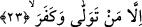
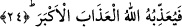

Aynı âyet “sin” harfiyle aslına uygun olarak “museytır” şeklinde okunmuştur. Bazı kırâat
âlimleri ise sad harfini ze harfine karıştırarak ve işmam yaparak okumuşlardır.
“Mûsâytır” kelimesinin anlamı; herhangi bir şeyi kontrol eden, durumunu gözetlemek
ve amelini yazmak üzere o şey üzerinde hakimiyet kuran kimse demektir. Kelimenin aslı
“satır” kökünden gelmektedir. Bu kökten olmak üzere kitaba “museytar” denir. Bunu
yapana ise “museytır” derler.
Rağıb Isfahânî’nin ifâdesine göre arapçada “satara fulanun alâ keza” veya “tasattara
aleyhi” ifâdeleri kullanılır. Bunun anlamı; filanca filan şeyin üzerinde bir satırın, diğer
satırın üzerinde durduğu gibi durdu demektir. Bütün bu açıklamalardan sonra âyet-i
kerimenin mânâsına geri dönecek olursak şöyle denmiş oluyor: “Sen onların üzerinde
bir koruyucu, gözetleyici değilsin.” Burada “museytır” kelimesi gözetleyici, muhafaza
eden kelimesinin kullanılımı gibi kullanılmıştır. Nitekim gözetleyici, muhafaza eden
anlamına gelen “kaim” bir âyet-i kerimede şu şekilde geçiyor: “Herkesin kazandığını
gözetleyip, muhafaza eden (hiç böyle yapamayan gibi olur mu?)” (Ra’d, 13/33)
Ayrıca bu “musaytır” kelimesi “ve ma ente aleyhim bi hafiyz” âyetindeki “hafiyz”
kelimesinin kullanımı gibidir.
23. Ancak yüz çevirip inkâr edene gelince,
“Ancak” Hak’tan veya öğüdü verdikten sonra hakka çağırandan “yüz çevirip inkâr
edene” küfürde sâbit olana veya küfrünü ortaya çıkarana “gelince” Fethur Rahman’da
bu âyet-i kerime şu şekilde tefsir olunuyor: İmandan yüz çevirip Kur’an’ı inkâr edene
veya nimete nankörlük edene gelince...
et-Te’vilat en-Necmiyye’de ise bu âyete şu şekilde mânâ veriliyor: Dünyaya
yönelerek Hak’tan yüz çevirene ve kâfir olana yâni halk ile bir olup hakkı örtene
gelince... Buradaki istisnâ munkatı’ istisnâdır. “Men” ise şart edatı değil mevsuledir.
Çünkü biraz sonra “fa” harfi ile merfû fiil gelmektedir. Bunlar “men” edatının şartıyye
olmadığını gösterir. Şimdi buna göre âyetin mânâsını verecek olursak: “Fakat yüz
çevirene ve Allah’ı inkâr edene gelince onlar hakkında otorite, kahr Allah Teâlâ’ya
âiddir. Onların üzerinde gözetleyici ve hakimiyet sâhibi Allah’tır.”
24. İşte öylesini Allah en büyük azap ile cezâlandırır.
Bu en büyük azap Cehennem azabıdır. Harareti şiddetli, dibi derin, kamçıları
demirdendir.